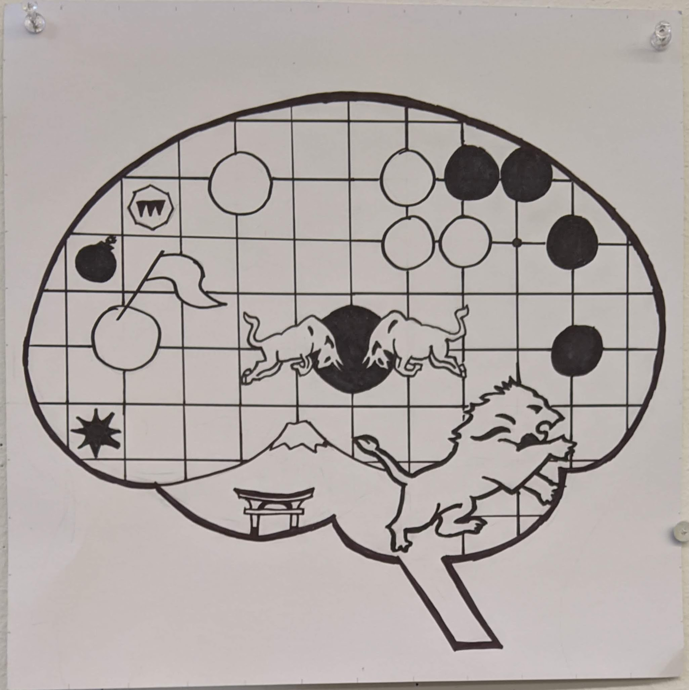
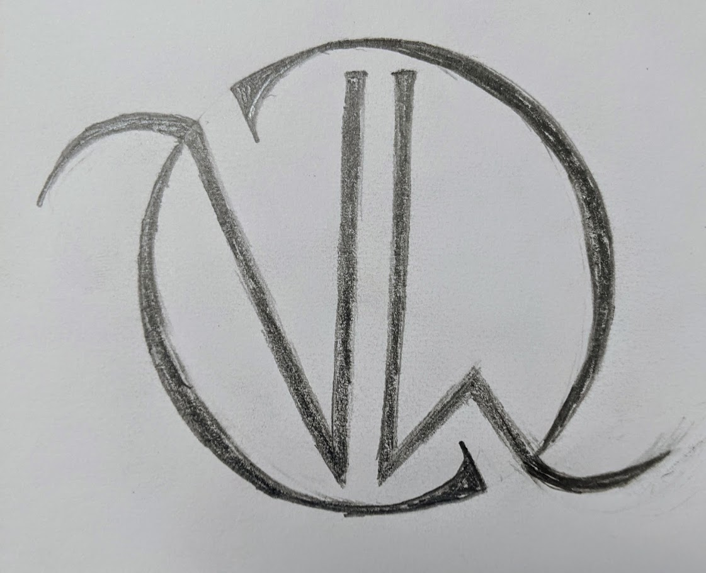
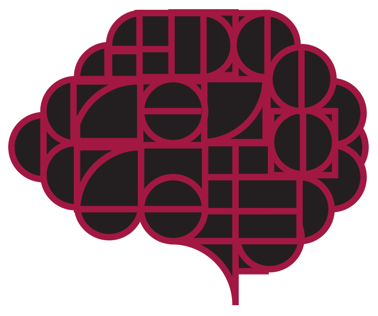
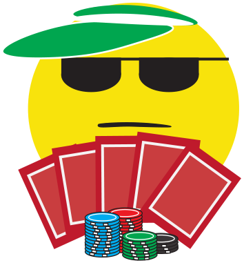
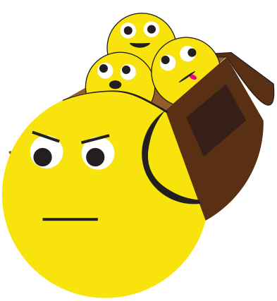
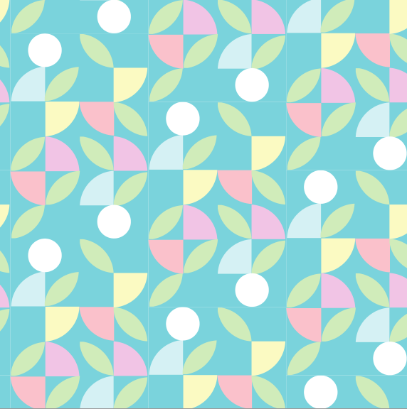
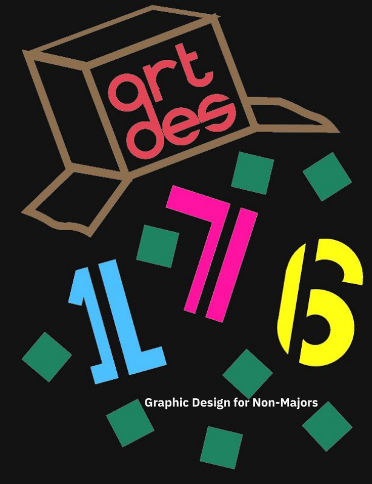
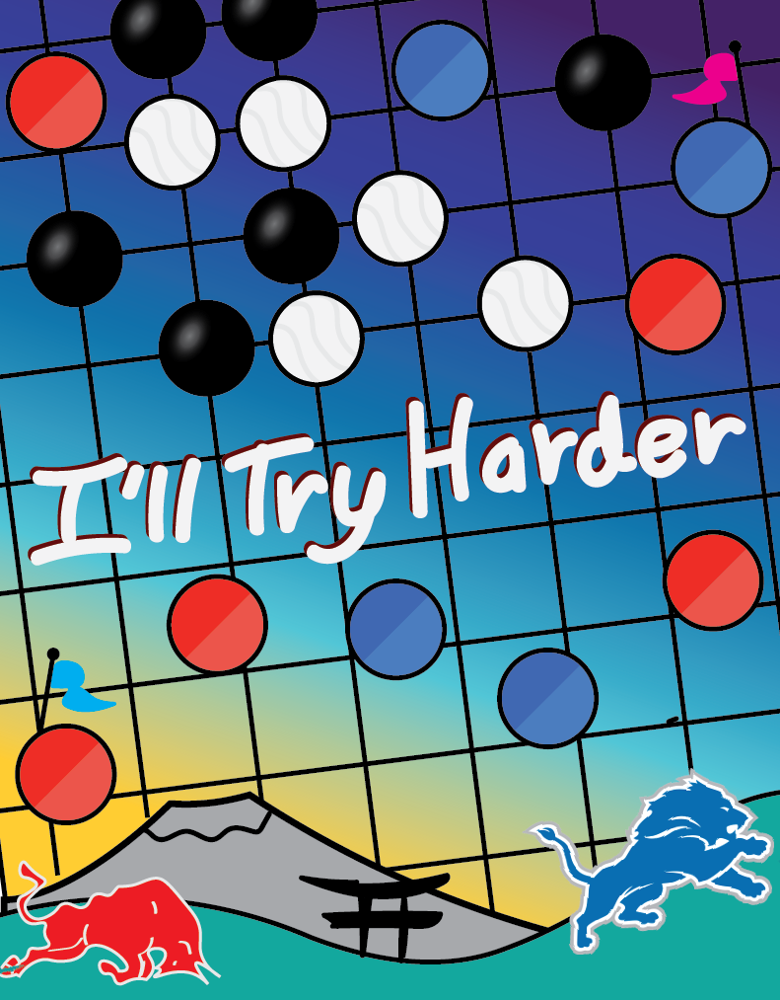

Despite the name of the class, our first project actually involved drawing a piece with only sharpie and paper that incorporates at least six of our favorite thigns. The interests I chose were: The Detroit Lions, Redbull, Tagpro (a niche webgame), Go (the board game), Japanese culture, and cognitive science.
One of our projects involved creating a typeface. I've dabbled in caligraphy before so my goal was to make something more ornate. Each letter and number was hand-drawn, scanned, and refined in Illustrator. Unfortunatley, there are some consistency issues as a resut of having to go through each letter individually, not having a complete and thorough picture of the full set throughout the process, and the difficulty in going back and making changes to existing letters.

We were tasked with creating a monogram from our initials. One challenge, I face was having creating a visual balance between the "N" and "W" in my name as in many of my initial designs, the "W" was often overpowering as it takes up more space than an "N". I finally reached a design I was happy with and drew it out in pencil before scanning it and polishing it up in Illustrator. Look familiar? This monogram is used as the facivon for this site!
This piece represents the black box that is the human brain. It utilizes simple geometric shapes and two colors to represent the idea contrasting it from the utter complexity of how our brains actually work.
We were tasked with designing our own original emojis to fit a feeling, reaction, or expereince that we felt was missing from the actual set. Two of mine include a poker face emoji to express not wanting to show your true intentions and a "Carrying the team" emoji for those group projects where you feel like you have to do everything for your team.
 This is a simple, calm pattern I created with light pastel colors and evoking imagary of flowers.
One project involved researching a graphic designer and making an original piece in their style. I was assing Paul Rand, known for his corporate logos (including "ABC", "UPS", and "IBM") and his embracing of Swiss style design. I created a poster for our class mimicking his style.
Our last project was to revist our first and create a new design utilizing what we learned in class. I included my motto, "I'll Try Harder," as I took this class the semester that the COVID-19 first broke out and interrupted classes. While I'm proud of many of the works I was able to accomplish in the class, I feel that I wasn't able to put in my best effort following having to unexpectedly move back home due to the pandemic. I'll try harder in my future design work to make up for this.
